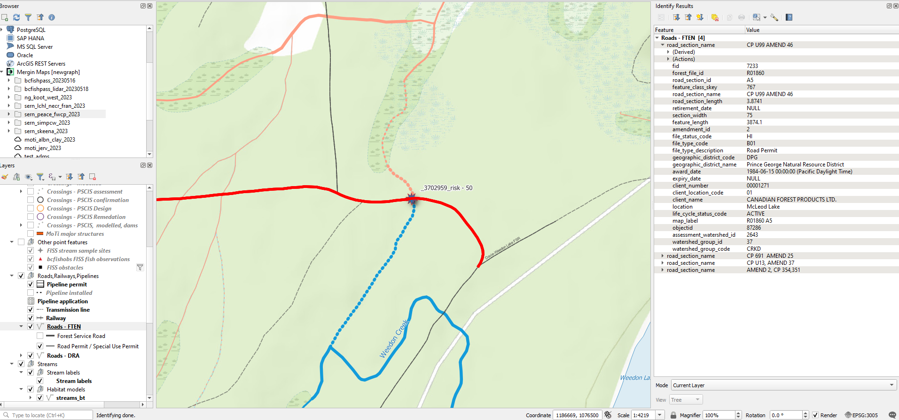

5 Office Data Management
5.1 Data Management
Once we are back in the office we:
- QA the data in QGIS, see Data Cleaning
- Input the data into the appropriate provincial submission templates, see Data Submission
We are looking to minimize hand work as it is time consuming, leads to errors and does not lend itself to reproducibility. In addition, we are continually improving our digital field forms so issues that inhibit the data to be transferred simply between digital forms and provincial templates should be dealt with through issues to dff-2022. In a perfect world we spend very little time fixing errors over and over again. We use our time to modify the scripts that produce the data and move on to improving our reporting and software products with our time.
5.2 Data Cleaning
Before data is imported to the PSCIS submission forms all data including the comments should be QA’d for spelling, to look for issues and add information.
A good way to do that is to copy and paste text into a table in word so you can see it nicely and get an intuitive spell check. Spelling and typo can be changed in QGIS. But if there are any repetitive errors, using R tidyverse functions will save time.
Exporting the PSCIS data to a gpkg is a great way to view everything spatially (ADD LINK to EXAMPLE). It can help clear up issues of missing information or incorrect data such as modelled crossing ids.
To see the site photos, look in Mergin and/or Onedrive directories.
5.2.1 PSCIS Phase 1 Data QA
Here is a rough list of things to check at each site for phase 1 QA:
- Correct spelling.
- Clear, concise comments.
- Add any relevant info from climate change assessments comments or pictures to the main
assessment_commentscolumn. - Backwatered, is the box ticked, does it align with the photos?
- Embeddedment, is the box ticked, does it align with the photos?
- Beaver activity, is the box ticked, does it align with the photos?
- Fish observations during assessment, is the box ticked?
- Correct number of
moti_chris_culvert_id. Check photos and comments to see how many culverts there are. If it’s a major Moti structure than include thechris_hwy_structure_road_idinstead. Beware that MoTi datasets are really bad and often incorrect. - Is the crossing type correct, check photos.
- Is the assessment type (Phase 1, Phase 2, or Reassessment) correct? For clarification see PSCIS Phase 1.
- Are the 6 photos correct? Barrel, inlet, outlet, upstream, downstream, and road. If a photo is truly missing (check photo folder first) then add a
no_photophoto to the site folder. - Is there an important landowner nearby? If so, could we collaborate?
- Has there been past restoration work at the site? Search the stream name in EcoCat. If yes and there is a link to a report, add relevant info and url link to the assessment comments. Additionally, add the reference to
Zotero/region/and then add the citation key to themy_citation_keycolumn. - Is the culvert relatively close to the modelled crossing? If it’s more than ~30m away then create an issue for the site with a reminder to make sure
bcfishpasslinks once the data is in PSCIS and if not link with bcfishpass csv. - Move survey sites to their proper locations by comparing with tracks and waypoints and remove unnecessary features. This should be done during the data entry stage so that the reporting and mapping products are accurate from the start.
- Check out an example of the data cleaning process here.
5.2.1.1 Road Tenure Holder
We want to identify the active road tenure holder because they can often help with replacing the crossing. Use the table below to abbreviate the client_name so that it displays in our report tables nicely (Table 5.1).
Query the
FTEN road layerand add the active (life_cycle_status_code = ACTIVE) road tenure holder (client_name) to theRoad tenurefield in the form.When the
client_nameis someone other than the MoF (Ministry of Forest) or BCTS (BC Timber Sales) we document themap_labelas well because this helps us specify the exact road section where the crossing is located. To do this, grab the abbreviatedclient_namefrom the table below, append themap_labelfrom theFTEN road layerto the end, then add it to theRoad tenurefield in the form.
An example is shown below and additional instruction can be found here. The Road tenure for the starred crossing would be Canfor R01860.

sfpr_xref_rd_tenure_names() |>
dplyr::rename("Client Name" = client_name) |>
dplyr::rename("Client Name Abbreviated" = client_name_abb) |>
my_dt_table()5.2.1.2 Assigning Priority Ranking
Here is list of things to consider when assigned a priority to a site:
- Is the site a barrier to fish passage?
- Is it valuable habitat? Or could be with some restoration work?
- Are there fish observations upstream, check using
bsfishobslayer. If so, what species? Upstream presence of BT, CH, CO, BB is more important than RB and much more than coarse species like CC, LSU and PCC. They all matter but we prioritize the more rare and generally more “valued”. Mention BT, CH or CO if they are known upstream or are very close downstream (same stream or downstream trib before major system). - Unassessed crossings downstream?
- Valuable landowners nearby?
- Should the site be added to the “follow up with a habitat confirmation” list?
- If it’s a OBS (bridge, ford, etc) then you don’t need to assign a priority.
5.2.2 PSCIS phase 2 data QA
Having assessed a stream crossing and identified it as a possible candidate for remediation, the next phase is to carry out a Habitat Confirmation, known as phase 2. A Habitat Confirmation quantifies the amount of habitat and qualifies the type of habitat which stands to be regained if a given crossing is remediated. Phase 2 isn’t really about a “return visit” as much as it is about the level of detail we conduct. If we can see that the site is a good candidate for replacement, we will sometimes do a phase 1 and 2 assessment (detailed walk and fish sampling) all in one day to try to use our time most effectively.
- Ensure locations for habitat surveys are at the downstream end. Remove excessive features that do not seem significant. However, you can make a note of them in the comments column. This should be done during the data entry stage so that the reporting and mapping products are accurate from the start.
5.3 Data Submission
5.3.1 PSCIS Phase 1
After the data is QAed, it is transferred to the appropriate Phase 1 submission spreadsheet. Although all are Phase 1 barrier assessments, they are organized into three distinct groups based on the crossing’s assessment history. Each group is submitted in a separate but identical spreadsheet, renamed for each group:
- Phase 1: The crossing was assessed for the first time. They go in
pscis_phase1.xlsm. - Phase : A Habitat Confirmation was completed at this crossing, which includes a barrier assessment, regardless of if the crossing was previously assessed. They go in
pscis_phase2.xlsm. - Reassessment: The crossing was previously assessed, and we are conducting a reassessment. They go in
pscis_reassessments.xlsm.
A link to the BC Government PSCIS User Guide containing submission procedures can be found at the link here (provinceofbritishcolumbia2017PSCISUser?)
New Graph specific submission procedures are as follows:
- Download the latest PSCIS Phase 1 submission spreadsheet here, to the
<repo_name>/datafolder. Duplicate the file and rename them as follow:pscis_phase1.xlsm,pscis_phase2.xlsm,pscis_reassessments.xlsm. - Use 0130_pscis_export_to_template.R to transfer the cleaned data to the submission spreadsheets.
- Use 0140-pscis-export-submission.R to transfer the photos and submission spreadsheet file to the PSCIS submission folders on OneDrive (
OneDrive-Personal/Projects/submissions/PSCIS.) - Using the PC computer, move the select
OneDrive-Personal/Projects/submissions/PSCISfolders from OneDrive to theDocuments/submissionsfolder on the local machine. This is because the macros do not allow you to submit the spreadsheet from OneDrive so the submission folder needs to be transferred to a directory on your local machine. - For each spreadsheet, add in the budget on the cover page,
Validatethe spreadsheet and fix any errors, thenGenerate Submissionand follow the pop up instructions. For the user reference, use the formatProject location_year_phase_date of submission(examplepeace_2024_phase1_20241223).
Some details/tips that are important in the workflow of Phase 1 submission are listed below:
It is very important to use only
copy+paste+special values(right click orcontrol + command + V) when copying the data into the submission spreadsheets as there are “standards” in the input spreadsheets that can be violated with regular copy paste leading to issues later on in the submission process.You should have a submission folder for each distict group of Phase 1 barrier assessments (Phase 1, phase 2, and Reassessments) in
OneDrive-Personal/Projects/submissions/PSCIS.Before you
Generate Submission, the submission folder should contain:- The excel submission spreadsheet
- Individual site folders each with the 6 required photos for submission. This is checked in
0140-pscis-export-submission.R. - A
.txtfile titledreadme.txtwhich contains:- a link where the gitbook report can be found
- a link where the pdf report can be found
- a link where the scripts to produce online interactive reporting and pdfs are located
- a link where the raw report data can be found
Some helpful links:
- Link to log in to the PSCIS Phase 1 submission (ESF) portal. Use this to view the status of a submission or see past submissions. https://apps.nrs.gov.bc.ca/ext/esf/submissionWelcome.do
- Link to upload a PSCIS Phase 1 submission, although this is provided during
Generate Submissionpop up: https://www.env.gov.bc.ca/csd/imb/soft/soft.shtml
5.3.2 Fish Data and Habitat Confirmations
- Fish and fish habitat data is not “fish passage” data per se but is used in our reporting systems template download page
NOTE before beginning: The way to document all changes in habitat_confirmations.xls so that we can go back if something get really mangled (easy for that to happen with copy paste values in those spreadsheets) is to use the fpr_import_hab_con(row_empty_remove = T) function between steps and commit the resulting csv files that get generated in the data/backup directory. Run fpr_import_hab_con(row_empty_remove = T) AND COMMIT with really informative commit message after each step that involves moving rows and other moves that you think have potential to result in mangled files.
Steps to QA and submit habitat confirmation data contained in habitat_confirmations.xls :
If not done yet, ensure the UTM coordinates for each site are at the downstream starting point of the survey. Use basecamp to see GPS tracks and copy and paste coordinates to spreadsheet. Remove excessive features that aren’t significant
Make a lightweight current bcfishpass project on mergin in the Projects/gis/ directory using the qlr from the up to date bcfishpass repo.
Update the mapping objects (gpkg and geojson) in the report repo to confirm the locations are correct. Link to the geojsons directly in mergin project.
Add the 1:50,000 watershed codes to the spreadsheet. These can be found programmatically using a script. An example can be found in the skeena 2022 repo here.
- Look up the referenced stream layer in QGIS and QA sample sites to make sure the codes are correct before submission. NOTE if there is no 1:50,000 watershed code available for a site, enter the code of the nearest parent stream in the
alias_local_namefield.
- Look up the referenced stream layer in QGIS and QA sample sites to make sure the codes are correct before submission. NOTE if there is no 1:50,000 watershed code available for a site, enter the code of the nearest parent stream in the
Run the QA tool that ships with the submission template. The link to the tool within the spreadsheet is broken. The tool can be downloaded on this page here
Run code at the end of the
extract_wsc_move_aliasscript so you can extract the local names of our sites and burn to csv. Erase the local names from the submission sheet AFTER copying and moving the file ready for submission. Move the file to a folder on OneDrive and ensure the name of the permit number is included in the file name (ex:SM21-626611_data.xls)Visit the BC Fish Data Submission Page and login to the sharepoint submission site (link at the bottom of the page) to complete a project submission form. See old submissions on this page for guidelines and examples.
5.3.3 PSCIS Phase 2
The project is set up within the submission interface which can be found at the link below:
A link to the BC Government PSCIS User Guide containing habitat confirmation submission procedures can be found at the link here (bcgovernment2017PSCISUser?).
+ MAPS DOWNOAD FROM https://hillcrestgeo.ca/outgoing/fishpassage/projects/Copy and paste the key information from the associated online report into the each of the Crossing ID reporting interfaces. A KEY area to get info from are the tables in the Results and Discussion section of the online reports (amount of habitat, species and comments). This information comes from the custom csv file habitat_confirmations_priorities.csv located in the data directory of each repo.
Almost always the surveyed crossings are connected to downstream habitat so you will almost always click this box - unless there are barriers downstream and we know somehow (background info or sampling) that there is no fish presence at all upstream (non-fish bearing).
Recommendation - proceed to design unless there is some reason its not worth it at all (priority - no fix or potentially low with complications of some sort)
Amount of habitat upstream (NOT THE MODELLING data but a more conservative estimate found in text - in the
ConclusionandStream Characteristics Upstreamsection of the individual site memo appendices of the online report).Habitat Value - see
ConclusionandStream Characteristics Upstreamsections of individual memos for thelow,mediumandhighrating.Habitat Value Rationale - see
ConclusionandStream Characteristics Upstreamsections of individual memos for some brief details of why the habitat was rated as it was. See Table 3.3 of main report for some guideline criteria.PLEASE NOTE that the online version of the PDF maps from this project are archived within https://hillcrestgeo.ca/outgoing/fishpassage/projects/bulkley/archive/2021-04-21/ . The links in the online report memo appendices will take you to the latest versions of the maps and it will not be easy to find the sites. You should look at the context for each site within the PDF maps because sometimes there are relevant things to see and potentially note. For example - for Site 123794 (example completed) there is a DV (dolly varden) fish observation upstream of the crossing that can be noted. Usually the species are described in the
Backgroundsection of each memo (check there first) but if not - to see what the codes are you can search in the Fisheries Inventory Data QueriesFish Species Codes Queryor you can view a lookup within theSpecies by Common Namepage of the Fish Data Submission TemplatePhotos are in the
data/photo/<site_id>directories. Theupstream,downstream,inlet,outletandbarrelphotos are already loaded to the provincial system so upload five others (pick the ones with a_k_in the filename FIRST as those are the ones from the report. If there is a_d_in the filename it is from downstream and if there is a_u_it is upstream. If there are not enough photos, pick extra photos from the habitat survey and label them with a_k_nm_. This is important as this filters out these photos from our interactive map so we don’t clutter it. Put very brief note in mandatoryDescriptionbox (ex. habitat downstream).Upload the correct PDF map from your locally unzipped https://hillcrestgeo.ca/outgoing/fishpassage/projects/bulkley/archive/2021-04-21/bulkley_2021-04-21.zip . Copy the filename from the map to populate the mandatory
Descriptionbox. You can tell which is the right map from the name of the MAPGRID listed in the end of theBackgroundsection of each memo. See example completed site.
5.3.4 PSCIS Phase 3 - Design
Read instructions in PSCIS User Guide section titled : Initiating a Design Project.
Responsible Partyis SERN BC (input their client number)Responsible Partycontact info is Al IrvineConsultant Informationsection is the engineering company that carried out the designExpiry Datecan be 5 years from the proposal date (include note in comments “Remediation proposal expiry date estimated at submission and may not be accurate. Signing engineer should be consulted.” )- In
Designer's Commentsfield, include info on who completed submission and links to site assessment appendixes in reports.
Methods for engineering standards are found in (provinceofbritishcolumbia2013FishPassage?)
5.3.5 PSCIS Phase 4 - Remediation
Read instructions in PSCIS User Guide section titled : Initiating a Remediation Project.
5.4 Planning
In preparation for field work, we screen bcfishpass modelling outputs for sites that are likely to have high value habitat. These steps can be found in the field planning scripts extract_planning.R, check them out in the Fraser 2023 repo for a starting point. Preliminary workflows are described below.:
Add columns for comments and a priority ranking for follow up (no fix, low, mod, high)
Add column called
my_citation_key1throughmy_citation_key3so that we can add zotero citation keys, use pull them out and use these citation keys to populate the references in the year end report.We want to keep the entire
bcfishpass.crossingstable (with our new columns) vs make a new object without some of the sites. We can just query them out.Look at sites that have no crossings downstream so that we don’t review the same tributary system over and over again.
Filter the crossings to select ones that meet some or all of the following criteria. These crossings will undergo a detailed review to facilitate prioritization for Phase 1 Fish Passage Assessments and Phase 2 Habitat Confirmations:
- Confirmed fish presence upstream of the structure.
- Stream width documented as > 2.0m.
- Linear lengths of modelled upstream habitat <8% gradient for ≥1km.
- Crossings located on streams classified as 3rd order or higher.
- Crossings located on streams with >5 ha of modeled wetland and/or lake habitat upstream.
- Habitat value rated as “medium” or “high” in PSCIS.
Export the sites to a geopackage. Queries for review can be done in QGIS query builder and should be saved in a corresponding repo, see info in next steps.
Through the process of review we update the
bcfishpassrepo. There are lots of opportunities to increase the state of knowledge for all including the modelling through the csvs at https://github.com/smnorris/bcfishpass/tree/main/data . It is important to understand what all of them do and use them all when appropriate.Scoping for field sites is an opportunity to review background info and add references to zotero.
After executing the preliminary workflows described above you can view the sites in QGIS by following these steps:
- Sync with mergin first - this makes a huge difference because other team members may be working on the same QGIS project. Do this from another project to avoid conflicting
.qgsfiles - Open your new layer in the Q project, import it as a layer (don’t rename anything)
- Put it somewhere in the menu you consider rational
- Symbolize it so you can see it really nicely. Double click the layer to get to its properties
- Use the
query builderto filter so you only see the layers that have amy_review = TRUEcreated the in its properties (Sourcewindow in properties) - Add it to the reporting theme (be sure to 1. refresh that theme, 2. add only that layer, then 3. “Replace theme”

- Find out how to “dock” your attribute table in the bottom of your screen so you can work on editing the table while still looking at the map. Right-click layer to see attribute table.
- Sort by CO rearing habitat descending (just click in attribute table) and have a look at the first 3 sites. Review all the columns and learn what they do. Remember that we have access to all the column comments (that have them) by a move scripted in
tables.Rand some of them we put in our report methods tables.
- Be aware that we visited many sites this summer and you should see that data beside or on top of some of the sites. You should click into the
field dataof already assessed sites and see what it says. Photos for those sites are in the file too so you can look at those. - If there is no associated field site you can fill in the custom columns as follows. For priority it is one of the following
no_fix,low,modandhigh. Themy_priority_commentsshould include a justification for why it was given that ranking. For example, “stream appears to have good flow and tons of gravel in PSCIS photos” (accessible throughimage_view_urlif it has a phase 1 completed already) or “known Chinook spawning location just downstream and target stream for restoration by Nechako streamkeepers.”no_fixare often ones that need adjustments inbcfishpasscsvs. - When you can tell a site is not a bridge or removed and it seems like a decent candidate to look at you can search its stream name (or parent stream name in EcoCat). We don’t really want excel files of fish data (usually accessible through the
fisslayers in QGIS) but if there are relevant reports they go inZotero/region/orZotero/region/watershed_group_code/dependent on their context. They can then be referenced in themy_citation_key*columns, for example,my_citation_key1= properly formated Zotero citation key.
Finally, the following are guidelines for planning workflows done shortly before field work days:
- Research the watershed of interest and try to identify major tributaries of interest
- Even if they did not appear in preliminary prioritization, investigate crossings that could be valuable
- Regularly check satellite imagery for clues and evidence that a crossing does or doesn’t exist, this can save time in the field (ex: deactivated roads or fords). Add fords and bridges that aren’t modelled as open bottom structures to the bcfishpass repo.
- Look out for streams that have fish points upstream, especially salmonids.
- Gather helpful information on crossings by reading past survey comments (if available).